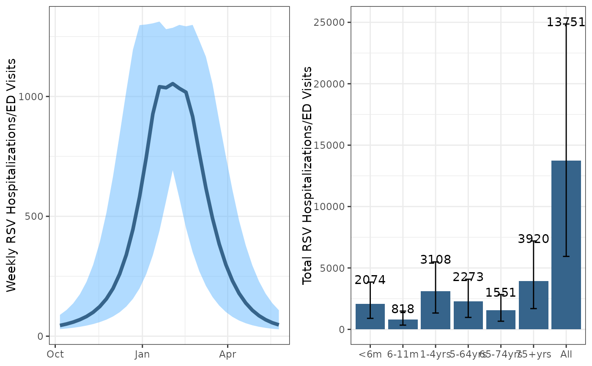

Run scenario projections for different levels of immunization coverage.
Usage
scenario_projection(
fitted_parms,
parmset,
yinit,
yinit.vector,
data_start,
projection_start,
projection_end,
adult_start,
adult_end,
adult75_doses,
adult75_doses_last_year,
adult65_74_doses,
adult65_74_doses_last_year,
maternal_start,
maternal_end,
maternal_doses,
monoclonal_catchup_start,
monoclonal_catchup_end,
monoclonal_catchup_doses,
monoclonal_birth_start,
monoclonal_birth_end,
monoclonal_birth_doses,
scenario_name,
projection_intervals = TRUE
)Arguments
- fitted_parms
A list of fitted parameters estimated using the fit_model() function.
- parmset
A list of fixed parameters, retrieved from the get_data() function.
- yinit
A matrix of initial compartment values, retrieved from the get_data() function.
- yinit.vector
A vector of initial compartment values, retrieved from the get_data() function.
- data_start
The start data of the RSV time series data.
- projection_start
The user defined start date of the projection period.
- projection_end
The user defined end date of the projection period.
- adult_start
The start date of vaccination for older adults for the projection period.
- adult_end
The end date of vaccination for older adults for the projection period.
- adult75_doses
The number of vaccine doses administered to adults 75+ years during the period of vaccine administration.
- adult75_doses_last_year
The number of vaccine doses administered to adults 75+ years in the previous season.
- adult65_74_doses
The number of vaccine doses administered to adults 65-74 years during the period of vaccine administration.
- adult65_74_doses_last_year
The number of vaccine doses administered to adults 65-74 years in the previous season.
- maternal_start
The start date of the maternal vaccination for the projection period.
- maternal_end
The end date of maternal vaccination for the projection period.
- maternal_doses
The number of doses administered to pregnant women during the administration period.
- monoclonal_catchup_start
The start date of monoclonal antibody administration to infants <8 months.
- monoclonal_catchup_end
The end date of monoclonal antibody administration to infants <8 months.
- monoclonal_catchup_doses
The number of monoclonal antibody doses administered to infants <8 months (excluding birth doses).
- monoclonal_birth_start
The start date of monoclonal antibody birth doses.
- monoclonal_birth_end
The end date of monoclonal antibody birth doses.
- monoclonal_birth_doses
The number of monoclonal antibody doses administered as birth doses.
- scenario_name
A user defined scenario name. Suggest to name Scenarios A,B,C,D, etc. For the Shiny App to work make sure one scenario is named "Counterfactual"
- projection_intervals
Whether to calculate projection intervals. Default = TRUE
Value
A data frame of weekly RSV hospitalizations by age group for the user defined projection period. If projection_intervals = TRUE then 100 trajectories are returned. To convert to a point estimate and projection intervals take the median and 95% quantiles from the 100 trajectories.
Examples
dat = get_data(state_or_county="state",state_abbr="CA",county_name=NULL)
#> Using the Vintage 2022 Population Estimates
#> Using the Vintage 2022 Population Estimates
parmset=dat[[1]]
yinit=dat[[2]]
yinit.vector=dat[[3]]
scenario_a = scenario_projection(fitted_parms=fitLL, #output from the fit_model() function
parmset = parmset,
yinit=yinit,
yinit.vector=yinit.vector,
data_start = '2016-10-08',
projection_start = '2024-10-01',
projection_end = '2025-06-01',
adult_start = '2024-08-01',
adult_end = '2025-05-01',
adult75_doses = 100000,
adult75_doses_last_year=250000,
adult65_74_doses = 100000,
adult65_74_doses_last_year=250000,
maternal_start = '2024-09-01',
maternal_end = '2025-04-01',
maternal_doses = 50000,
monoclonal_catchup_start = '2024-10-01',
monoclonal_catchup_end = '2025-04-01',
monoclonal_catchup_doses = 50000,
monoclonal_birth_start = '2024-10-01',
monoclonal_birth_end = '2025-04-01',
monoclonal_birth_doses = 50000,
scenario_name="Scenario A",
projection_intervals=TRUE)
